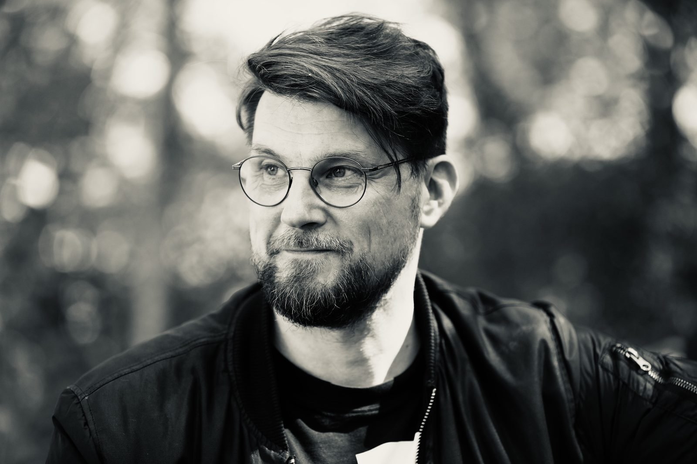

<section class="banner">
  {% include valikko.html %}
  
  <div class="shade"></div>
  <div class="caption">
    <h1>Kohtaamisia</h1>
  </div>
</section>

<main>

  {% for k in site.data.kohtaamiset %}<section class="spread mid">
    <div class="text rise">
      <p class="eyebrow">{{ k.kenen_kanssa }}{% if k.kesto %} · {{ k.kesto }}{% endif %}</p>
      <h2 class="title" style="text-wrap:normal">{{ k.otsikko }}</h2>
      <p>{{ k.kuvaus }}</p>
      <button type="button" class="video" data-youtube="{{ k.youtube }}" aria-label="Katso video: {{ k.otsikko }}">
        
        <span class="video-toista" aria-hidden="true"></span>
      </button>
    </div>
    {% if k.sivuhuomautus %}<aside class="sivuhuomautus rise" data-delay="300">
      <p class="eyebrow">Kulisseista</p>
      <p>{{ k.sivuhuomautus }}</p>
    </aside>{% endif %}
  </section>

  {% endfor %}{% include tilauskutsu.html %}

</main>

<script>
// Video latautuu YouTubesta vasta kun sitä painetaan: sivu pysyy nopeana
// eikä YouTube aseta evästeitä ennen sitä.
document.querySelectorAll(".video").forEach(function (nappi) {
  nappi.addEventListener("click", function () {
    var kehys = document.createElement("iframe");
    kehys.src = "https://www.youtube-nocookie.com/embed/" + nappi.dataset.youtube + "?autoplay=1&rel=0";
    kehys.title = nappi.getAttribute("aria-label");
    kehys.allow = "autoplay; encrypted-media; picture-in-picture; fullscreen";
    kehys.allowFullscreen = true;
    var kotelo = document.createElement("div");
    kotelo.className = "video";
    kotelo.appendChild(kehys);
    nappi.replaceWith(kotelo);
  });
});
</script>
